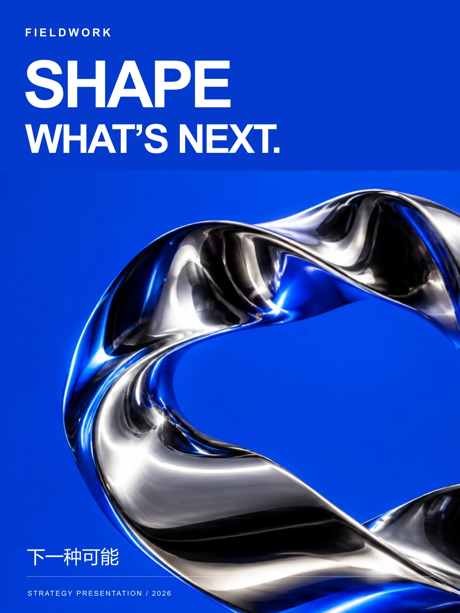
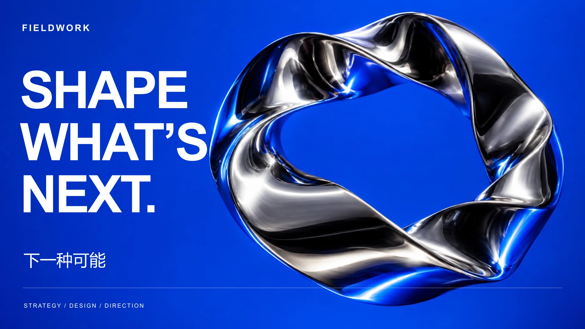
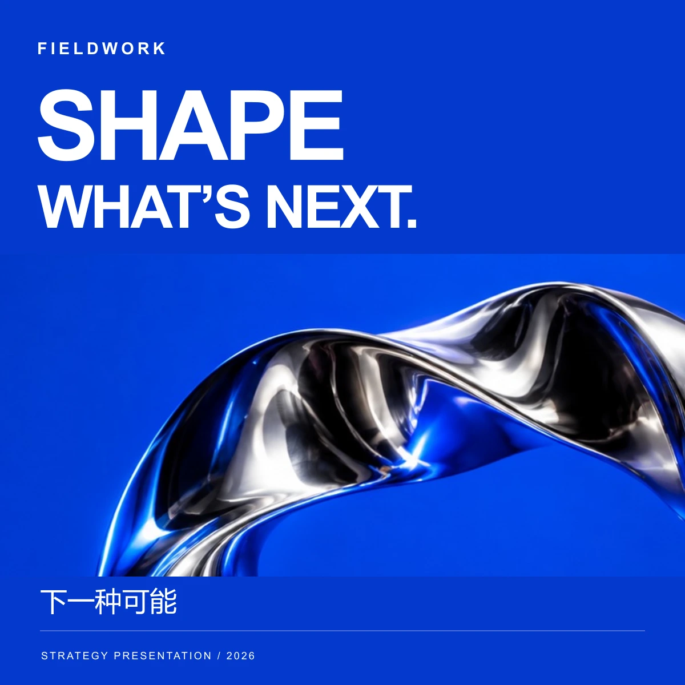

04 / 策略演示视觉
CONCEPT PROJECT / 2026
FIELDWORK
Shape what comes next.
把未定的可能，塑造成清楚的方向。

项目概念
策略提案演示的视觉概念。流动的金属结构代表变化，明确的文字网格则为变化建立方向。
电光蓝、镜面银与紧凑的无衬线大字构成主视觉。纵向封面、横向演示与方形传播各有独立排版，共用一致的视觉语言。
横向表达
LANDSCAPE COMPOSITION / 16:9


